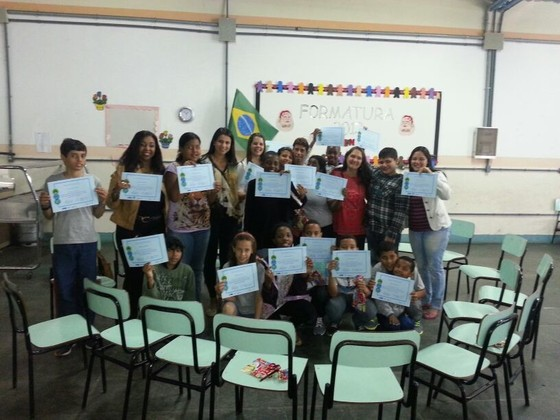
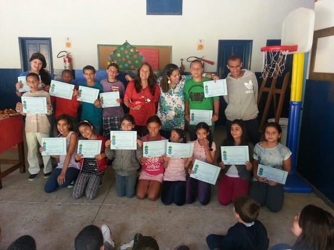
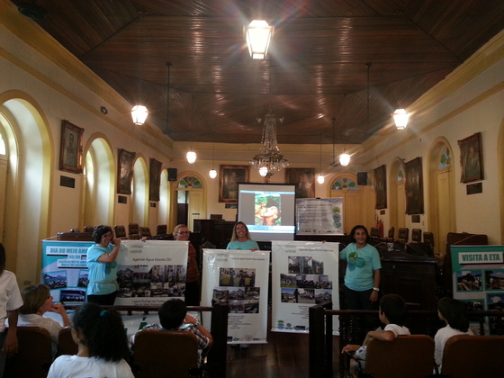
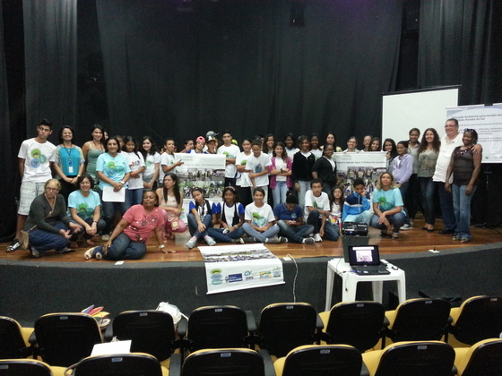
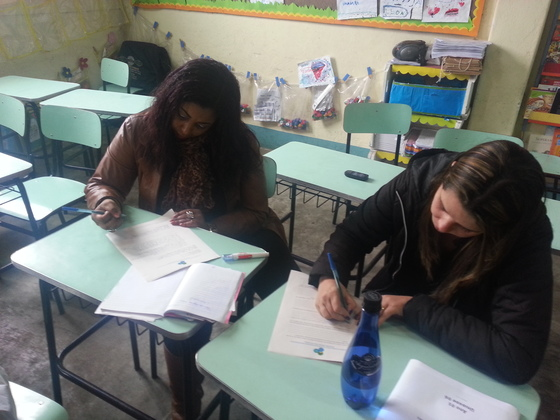
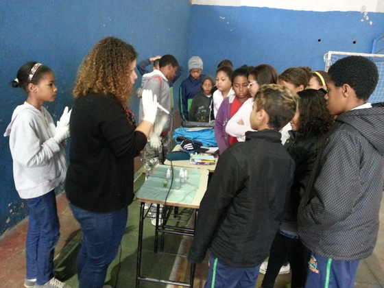
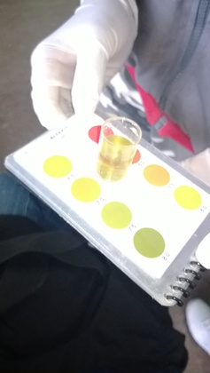
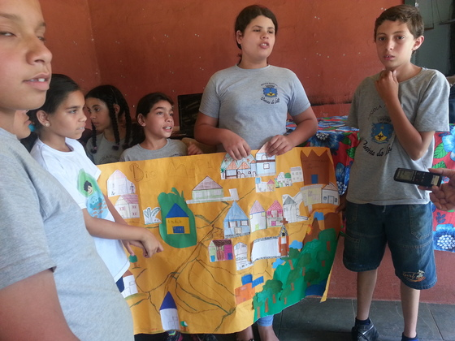
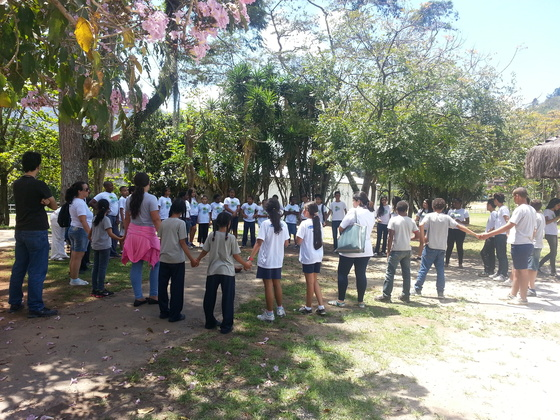
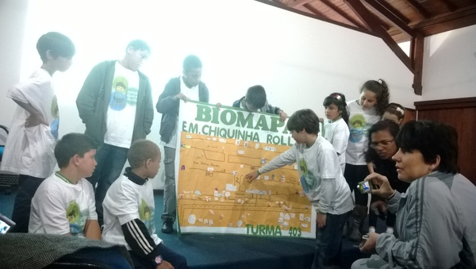

Entrega dos Certificados para os alunos da Escola Municipal Major Julio Frederico Koeler - Petrópolis.
17/12/2013

Alunos e Professores da Escola Municipal Major Julio Frederico Koeler na entrega dos certificados de participação no Programa Agenda Água na Escola na Região Hidrográfica do Piabanha.
Entrega dos Certificados para os alunos da Escola Municipal Quinta do Lago - Petrópolis
17/12/2013

No dia 17 de dezembro de 2013, os alunos e professores da E.M. Quinta do Lago receberam os certificados de participação no Programa Agenda Água na Escola junto com a técnica Rosana.
Encerramento das atividades em Barra Mansa
17/12/2013

No dia 02 de dezembro de 2013 ocorreu o encerramento das atividades do Programa Agenda Água na Escola, no município de Barra Mansa. Nesta atividade estavam presentes os alunos e professores das escolas que receberam o programa. Os representantes das escolas apresentaram através de fotos e depoimentos as atividades desenvolvidas durante os 18 meses de programa, e ainda apresentaram os cartazes produzidos na atividade de resgate da Bacia.
Na foto os professores apresentando os banners produzidos com as fotos das atividades.
Na foto os professores apresentando os banners produzidos com as fotos das atividades.
Encerramento das atividades em Resende
17/12/2013

Em 28 de novembro de 2013, ocorreu o evento de encerramento das atividades do Programa Agenda Água na Escola no município de Resende. Este evento contou com a participação de alunos e professores das escolas que receberam o Programa, foi feita uma apresentação com as fotos de todas as atividades desenvolvidas durante os 18 meses.
Os alunos e professores homenagearam a ONG O Nosso Vale! A Nossa Vida! entregando uma pipa que representava as diversão e a brincadeira que tiveram além de todo o aprendizado. Homenagearam ainda a Agência de Meio Ambiente e a Secretaria de Educação com mandalas em que as pétalas representavam as pessoas, como um símbolo de União.
Os alunos e professores homenagearam a ONG O Nosso Vale! A Nossa Vida! entregando uma pipa que representava as diversão e a brincadeira que tiveram além de todo o aprendizado. Homenagearam ainda a Agência de Meio Ambiente e a Secretaria de Educação com mandalas em que as pétalas representavam as pessoas, como um símbolo de União.
Avaliação Geral do Programa pelas escolas participantes de Petrópolis.
02/12/2013

Em 07/11/2013 foi realizada a Avaliação Geral das Escolas Participantes do Programa Agenda Água na Escola, pelos professores do município de Petrópolis.
Pontos Positivos:
- Desenvolvimento de um consciência ambiental;
- Integração dos alunos com a comunidade;
- Oportunidade de conhecer lugares ligados ao meio ambiente.
Pontos a melhorar:
- Maior aproximação com as outras escolas;
- Continuidade para as próximas turmas;
- Maior divulgação.
Os professores relataram a mudanças de comportamento dos alunos que participaram do programa, em relação a conscientização sobre a importância da qualidade da água para o bem estar das pessoas, e passam isso adiante.
O biomapa e as análise de qualidade da água, foram as atividades destacadas como mais interessantes.
Pontos Positivos:
- Desenvolvimento de um consciência ambiental;
- Integração dos alunos com a comunidade;
- Oportunidade de conhecer lugares ligados ao meio ambiente.
Pontos a melhorar:
- Maior aproximação com as outras escolas;
- Continuidade para as próximas turmas;
- Maior divulgação.
Os professores relataram a mudanças de comportamento dos alunos que participaram do programa, em relação a conscientização sobre a importância da qualidade da água para o bem estar das pessoas, e passam isso adiante.
O biomapa e as análise de qualidade da água, foram as atividades destacadas como mais interessantes.
Evento Comunidade – Teresópolis
12/11/2013

Em 06/11/2013 na Escola Municipal Irene Santana
do Vale – Teresópolis – realizou-se o “Evento de divulgação dos resultados das atividades
realizadas para a comunidade”. Estavam presentes os alunos do 5° ano, os professores das turmas participantes, a diretora da escola, alguns membros da comunidade, pais de alunos e o presidente da associação de
moradores Sr. Marcos Paulo.
Foi apresentada a análise da qualidade da água, a “Árvore dos Sonhos” e “Muro dos desafios”, metodologias utilizadas pelo GEMA para desenvolver nos alunos o senso crítico em relação ao meio em que vivem .
Os pontos positivos e pontos a melhorar do bairro apresentados a através das metodologias acima foram comparados com o Biomapa criado pelos alunos.
A matéria completa pode ser acessada no site: http://netdiario.com.br/alunos-de-escola-no-pimentel-debatem-importancia-da-preservacao/.
Foi apresentada a análise da qualidade da água, a “Árvore dos Sonhos” e “Muro dos desafios”, metodologias utilizadas pelo GEMA para desenvolver nos alunos o senso crítico em relação ao meio em que vivem .
Os pontos positivos e pontos a melhorar do bairro apresentados a através das metodologias acima foram comparados com o Biomapa criado pelos alunos.
A matéria completa pode ser acessada no site: http://netdiario.com.br/alunos-de-escola-no-pimentel-debatem-importancia-da-preservacao/.
Análise das amostras de água
12/11/2013

Curso Formação dos Jovens Gestores Ambientais – Petrópolis
12/11/2013

Em 21/10/2013 no Parque de Exposição
de Itaipava, Petrópolis, realizou-se o “Curso de monitoramento da qualidade da água e introdução
à gestão integrada de recursos hídricos para a formação dos Jovens Gestores Ambientais”.
Estavam presentes os alunos e professores da Escola Municipalizada Sérgio Ribeiro da Rocha, Escola Municipal Major Julio Frederico Koeller e Escola Municipal Quinta do Lago.
Neste dia foi feita a Capacitação sobre mobilização Social e Comitê de Bacia Hidrográfica. Os alunos trocaram experiências com os Jovens Gestores Ambientais das outras escolas através da apresentação dos resultados do programa obtidos em cada uma delas, apresentando os Biomapas e discutindo sobre as agendas que estão sendo elaboradas.
"Nós cuidamos da águas todos os dias"
Estavam presentes os alunos e professores da Escola Municipalizada Sérgio Ribeiro da Rocha, Escola Municipal Major Julio Frederico Koeller e Escola Municipal Quinta do Lago.
Neste dia foi feita a Capacitação sobre mobilização Social e Comitê de Bacia Hidrográfica. Os alunos trocaram experiências com os Jovens Gestores Ambientais das outras escolas através da apresentação dos resultados do programa obtidos em cada uma delas, apresentando os Biomapas e discutindo sobre as agendas que estão sendo elaboradas.
"Nós cuidamos da águas todos os dias"
Integração dos alunos - Petrópolis
12/11/2013

Curso Formação dos Jovens Gestores Ambientais – Teresópolis
12/11/2013

Em 18/10/2013 realizou-se no Auditório do Parque Nacional da Serra dos Órgãos - PARNASO - Teresópolis o “Curso de monitoramento da qualidade da água e
introdução à gestão integrada de recursos hídricos para a formação dos Jovens
Gestores Ambientais”.
Estavam presentes os alunos e professores da Escola Municipal Antônio Santiago, Escola Municipal Chiquinha Rolla, Escola Municipal Manoel da Silveira Medeiros Sobrinho e Escola Municipal Professora Irene Sant'Ana do Vale.
Neste dia foi feita a apresentação dos Biomapas criados pelos alunos durante o programa, e feita uma comparação com o produzido em cada escola.
"Nós cuidamos da águas todos os dias"
Estavam presentes os alunos e professores da Escola Municipal Antônio Santiago, Escola Municipal Chiquinha Rolla, Escola Municipal Manoel da Silveira Medeiros Sobrinho e Escola Municipal Professora Irene Sant'Ana do Vale.
Neste dia foi feita a apresentação dos Biomapas criados pelos alunos durante o programa, e feita uma comparação com o produzido em cada escola.
"Nós cuidamos da águas todos os dias"